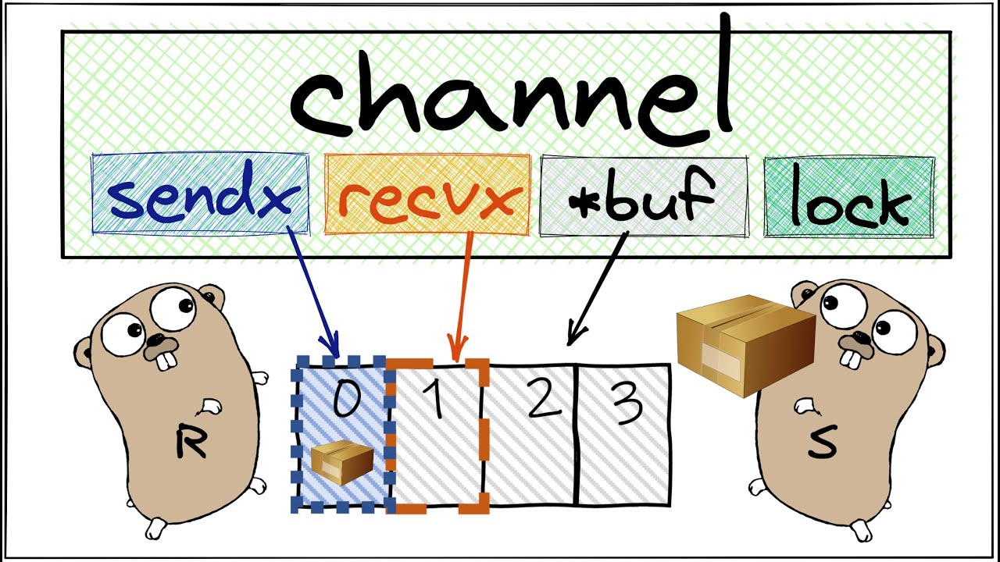

Введение в каналы
Каналы в Go — это один из основных механизмов для организации взаимодействия между горутинами. Они позволяют безопасно передавать данные между параллельно выполняющимися частями программы, обеспечивая синхронизацию и предотвращая гонки данных.
Каналы могут быть направленными (т.е. могут передавать данные только в одном направлении) или двунаправленными (т.е. могут передавать данные в обоих направлениях).
Создание и использование каналов
Каналы создаются с помощью функции make. Пример создания канала для передачи целых чисел:
ch := make(chan int)Отправка и получение данных
Для отправки данных в канал используется оператор <-. Например:
ch <- 42Для получения данных из канала также используется оператор <-, но в другую сторону:
x := <-chПример использования каналов
Рассмотрим простой пример, где мы создаем канал и запускаем две горутины:
package main
import (
"fmt"
)
func main() {
ch := make(chan int)
go func() {
ch <- 42
}()
fmt.Println(<-ch)
}
Типы каналов
| Тип канала | Описание |
|---|---|
| Двунаправленный | Канал, который может использоваться для отправки и получения данных. |
| Направленный | Канал, который может использоваться только для отправки или только для получения данных. |
Преимущества использования каналов
- Безопасный обмен данными между горутинами.
- Синхронизация выполнения горутин.
- Упрощение кода за счет использования встроенных механизмов Go.
- Поддержка различных типов данных.
Заключение
Каналы являются мощным инструментом для параллельного программирования в Go. Они упрощают синхронизацию и обмен данными между горутинами, что делает код более безопасным и понятным. Понимание работы с каналами является ключевым для разработки эффективных приложений на Go.